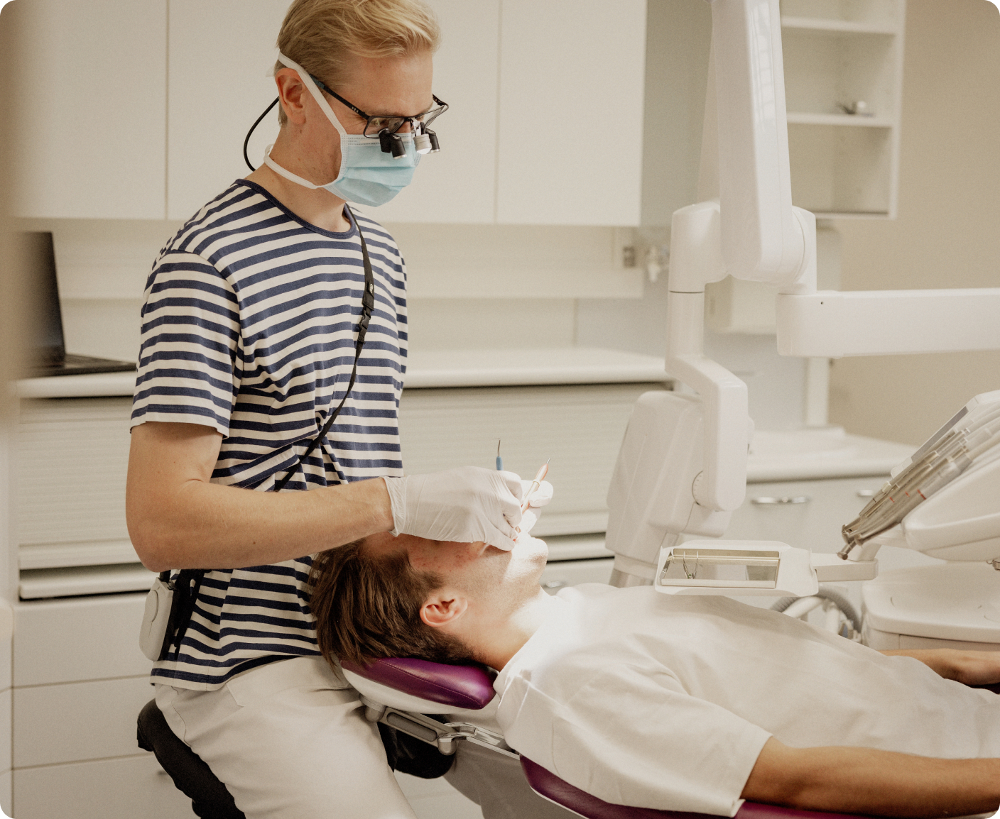
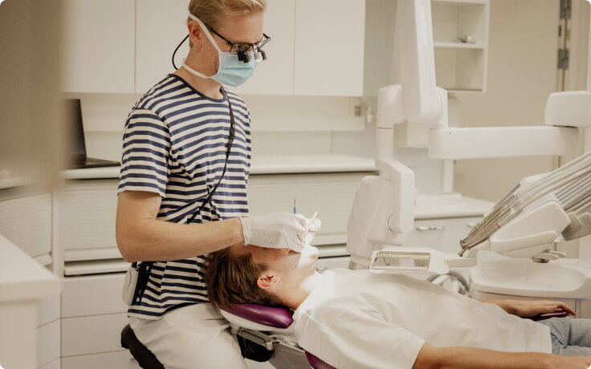
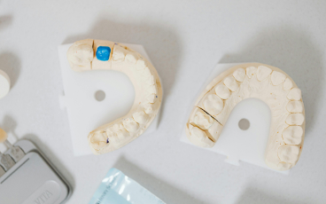
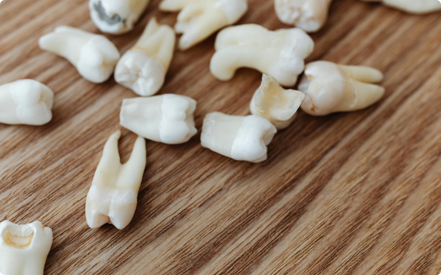
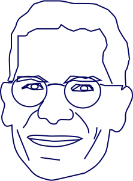

Hammastarkastus - Ei yllätysmaksuja
Sisältää tarvittavat röntgenkuvat. Ei toimistomaksua. Ilmainen pysäköinti.

Ensitarkastus
Sisältää tarvittavat röntgenkuvat. Ei toimistomaksua. Ilmainen pysäköinti.
Viisaudenhammas lähti täysin kivuttomasti ja tilat ovat moitteettomat
Eemeli 32v

Huolellinen suun terveydentilan kartoitus. Sisältää tarvittavat röntgenkuvat. Tarkastuksessa löydetään ongelmat ajoissa, jolloin hoito pysyy pienenä ja edullisena.
ei yllätysmaksuja

Reikiintyneen tai lohjenneen hampaan paikkaus. Hoito tehdään huolellisesti ja omaa hammasta säästäen.

Vaivaa viisurissa? Hampaiden ja viisaudenhampaiden poistot sekä leikkaukset lähes kymmenen vuoden kokemuksella.
Olen yleishammaslääkäri Juhani Pyhäranta Turusta.
Työkokemusta on kertynyt kohta kymmenen vuotta, josta valtaosa yksityishammaslääkärinä. Tällä hetkellä työskentelen ammatinharjoittajana Verkahampaassa ketjuihin kuulumattomalla vastaanotolla Turun keskustassa. Sen lisäksi leikkaan opiskelijoiden viisaudenhampaita Turun YTHS:llä.
Tavoitteenani on toteuttaa laadukasta perushoitoa - siis tarkastukset, paikkaukset, puhdistukset yms.- mahdollisimman hyvin ja huolellisesti. Sillä pyritään vähentämään suurempien ja kalliimpien hoitojen tarvetta.

Hammastarkastus maksaa 39 €. Hintaan sisältyvät tarvittavat röntgenkuvat, eikä erillistä toimistomaksua peritä.
Vastaanotto on Verkahampaassa Turun keskustassa osoitteessa Verkatehtaankatu 4, 20100 Turku. Pysäköinti on ilmainen.
Ajan voi varata netistä osoitteessa nettiaika.fi/verkahovi tai soittamalla numeroon 02 250 4500.
Kyllä. Teen hampaiden ja viisaudenhampaiden poistoja sekä leikkauksia lähes kymmenen vuoden kokemuksella. Poistot alkaen 119 €.
Hampaan paikkaus alkaen 50 €. Tarkemmat hinnat löytyvät Verkahampaan hinnastosta.
Palvelen suomeksi ja englanniksi. I also treat patients in English.